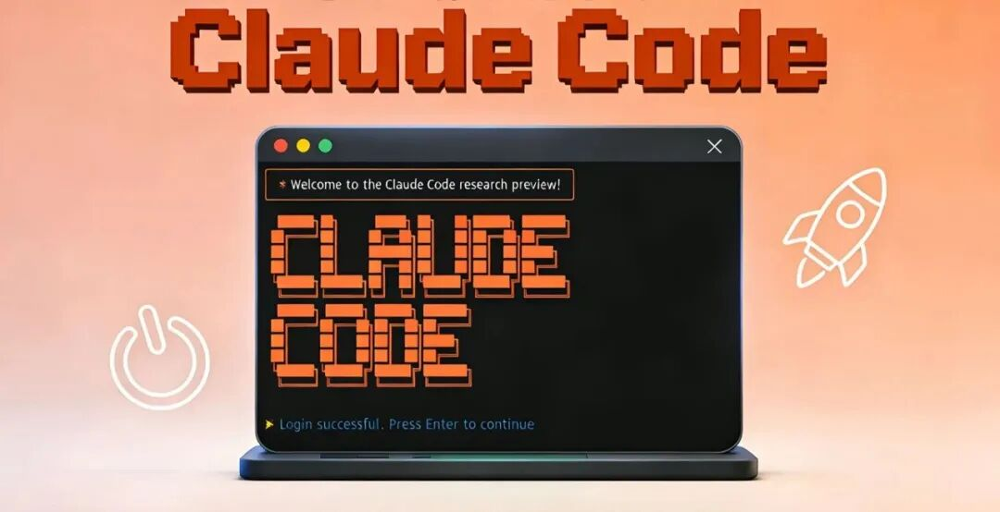
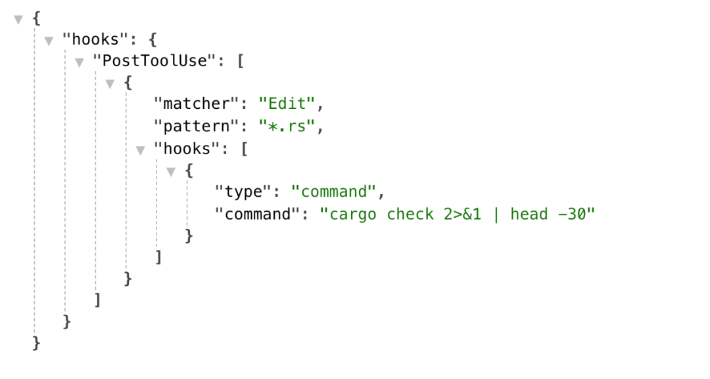

用了 Claude Code 几个月，从最初的新鲜感，到中间撞墙期的各种困惑，再到慢慢找到节奏，我发现一个有意思的现象：很多人把问题归到"模型不够聪明"，但更接近工程现实的结论是——Claude Code 的核心难点，从来不是在 Prompt，而在于你有没有把它当成一套"可验证、可治理、可分层"的代理系统来用。
技巧一：理解Claude Code不是聊天机器人
如果你把 Claude Code 当成"一个更强的 ChatBot"，很多误解从第一步就开始了。
Claude Code 的主循环是"收集上下文 → 采取行动 → 验证结果"，而不是简单的"提问 → 回答"。它可以读文件、跑命令、改代码、调用工具，并在你给定的边界里自主推进任务。
这个认知转变很重要。一旦你意识到它在处理的是一段会持续演化的任务过程，而非单纯的一问一答，你就会自然地调整使用方式：给它清晰的目标、给它可执行的验证方式、给它边界约束。
Claude Code 最擅长的是：在清楚目标和清楚验收的前提下，把一段可执行流程跑通。
技巧二：主动管理上下文，别等系统自己处理
很多人把上下文问题理解成"窗口不够长"，但实际更常见的问题是"窗口太吵"。
Claude 的 200K context window 会很快被填满，但更关键的是，固定开销和半固定开销会在你开始干活前就消耗掉预算：
这意味着真正用于思考和执行的空间只有 160-180K tokens。如果常驻内容写得太多，噪音就会把真正重要的信息淹没。
实践建议：
/context- 查看 token 占用结构，知道"钱花哪了"/clear- 清空会话，适合切换任务时/compact- 压缩但保留重点，适合长对话中间
Context 是有限资源，必须策略性管理。
技巧三：CLAUDE.md 是协作契约，不是知识库
很多团队第一次治理 Claude Code，最自然的动作是把经验都塞进 CLAUDE.md。结果往往是：文件越写越长，规则越写越细，但 Claude 真正遵守的比例反而越来越低。
更克制的做法是： CLAUDE.md 只放每次会话都成立的东西，建议控制在 2-3K tokens 以内。每加一条，问自己"删掉它会导致 Claude 犯错吗"，如果不会，就别放。
一个好的 CLAUDE.md 骨架示例：
# Project Contract## Build And Test-Install:`pnpm install`-Dev:`pnpm dev`-Test:`pnpm test`## Architecture Boundaries- HTTP handlers live in`src/http/handlers/`-Domain logic lives in`src/domain/`## NEVER-Modify`.env`or lockfiles without approval-Commit without running tests## ALWAYS-Show diff before committing
记住：常驻上下文更像缓存预算，不是知识库。你把它写成百科，它就会变成噪音源。
技巧四：验证应该放在第一位
很多人上手 Claude Code 时，注意力都放在前半段：怎么写 Prompt、怎么配技能、怎么接工具。但真正重要的第一条偏偏是"给 Claude 一种验证其工作的方式"。
原因很简单：只要验收标准不明确，Claude Code 就会变成一个看起来很能干、但你必须全程盯着返工的实习生。
如果没有这层反馈，工作方式通常会退化成：
- 它先根据描述做一个看起来合理的修改
- 无法确认自己到底修对没有
- 你人工发现问题，重新描述
- 它基于新描述继续猜
前置验证三要素：
- 什么叫完成
- 用什么命令或证据验证
- 失败后先查哪里
比如修复一个 bug，更好的提法是："登录接口报 500 错误，错误日志在 logs/error.log，修完后运行 pnpm test auth 验证"。
技巧五：根据任务复杂度决定是否用 Plan Mode
Plan Mode 不是每次都要开。
适合用 Plan Mode 的场景：
- 复杂重构，涉及多个模块
- 数据迁移，需要保证数据一致性
- 跨模块改动，影响面大
不需要 Plan Mode 的场景：
- 改一行文案
- 加一句日志
- 重命名变量
Plan Mode 的价值是把"探索"和"执行"切开，避免还没想清楚就开始动文件。工程上成熟的用法，是根据任务复杂度调整控制强度，而不是无脑开或不开。
技巧六：控制面一定要分层
Claude Code 可以看成两层：上层是"模型怎么思考"，下层是"系统怎么约束它"。真正决定稳定性的，很多时候是下层。
一个简洁的分工原则：
Skills 解决的是"怎么做一类事"。一个好 Skill 更像工作流入口，而不是"超长 Prompt 模板"。
Hooks 适合硬约束，不适合软判断。它更像是把那些不适合交给模型临场发挥的事情，重新收回到确定性流程里。比如 Rust + Lua 混合项目的 Hook 配置：

注意 head-30：Hook 输出必须限制长度，否则会污染上下文。
技巧七：理解 Prompt Caching 的成本结构
这个点很多教程不讲，但它深度影响了 Claude Code 的设计取舍。
Claude Code 的 Prompt 顺序：
- System Prompt → 静态，锁定
- Tool Definitions → 静态，锁定
- Chat History → 动态，在后面
- 当前用户输入 → 最后
Cache Rules Everything Around Me。高缓存命中率不只降低成本，还直接影响速率限制和响应速度。会话开始时加载的系统提示（15-20K tokens）会被缓存，后续相同内容享受 90% 折扣。
常见破坏缓存的行为：
- 在静态系统 Prompt 中放入带时间戳的内容
- 非确定性打乱工具定义顺序
- 会话中途增删工具
设计原则：将不变内容前置，不要让上层设计破坏底层缓存。
技巧八：用好这些不起眼的命令
上下文管理：
/context- 查看 token 占用结构/clear- 清空会话/compact- 压缩但保留重点/memory- 确认哪些 CLAUDE.md 真的被加载了
系统管理：
/mcp- 管理 MCP 连接/hooks- 管理 hooks/permissions- 查看或更新权限白名单
会话和分支：
claude--continue- 恢复最近会话claude--resume- 从历史会话列表中选择claude--continue--fork- 从已有会话分叉
小而有用的操作：
- 双击 ESC：回到上一条输入重新编辑
/btw：快速问侧问题，不增加上下文噪音Ctrl+B：长时间运行的 bash 命令移到后台
技巧九：MCP 和 Skills 不是越多越好
固定上下文开销是真成本。一个典型 MCP Server 可能带来 20-30 个工具定义，5 个 server 加在一起，固定开销就可能吃掉两万多 tokens。
在小项目里不一定明显，但一旦进入"大仓库 + 多文件 + 多轮修改"的场景，这个代价就会被放大。
评估标准：
- 这个 MCP/Skill 真的经常用吗？
- 它带来的价值是否大于它消耗的 2-3K tokens？
- 能否延迟加载，只在需要时激活？
Skills 的三种类型：
- Checklist Skills - 确保不遗漏步骤，如 TDD
- Workflow Skills - 引导如何思考，如 brainstorming
- Domain Expert Skills - 特定领域知识，如 react-pro
核心原则是渐进式披露：按需加载，优先级排序，防止过早加载知识。
技巧十：把仓库变成 Agent 可读的知识系统
最后一点，也是最重要的一点：仓库本身也得升级。
它不只是代码存放处，还得逐步变成 Agent 可读取、可验证、可纠偏的知识系统与规则系统。
一个 Agent 友好的仓库应该有：
- 清晰的构建命令：
pnpm install、pnpm test、pnpm build - 可执行的测试：每个功能都有对应的测试用例
- 结构化的文档：README、CHANGELOG、架构图
- 明确的边界：哪些文件不能动、哪些命令必须跑
这和我们之前聊过的判断是一致的：AI 一旦开始吞掉实现环节，人的价值会自然往验证、观测、约束、回滚这条链条上走。
最后
用 Claude Code 大概会经历三个阶段：
- 第一阶段觉得新鲜，什么都想试
- 第二阶段开始撞墙，规则不听、上下文乱、工具堆太多
- 第三阶段关注点悄悄变了——从"这个功能怎么用"变成"怎么让 Agent 在约束下自己跑起来"，见文章：《软件工程的下一战：Harness Engineering》。